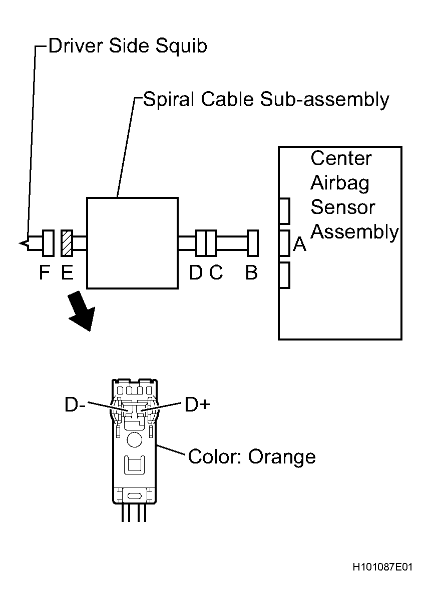
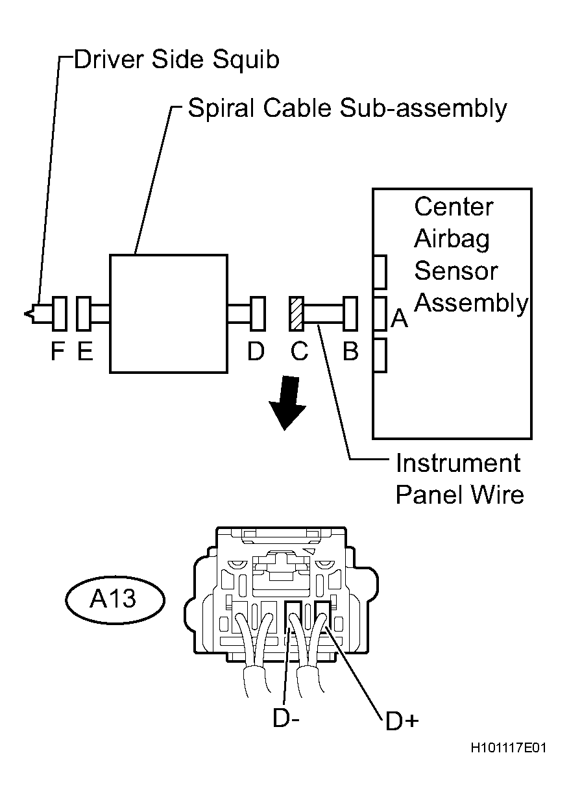
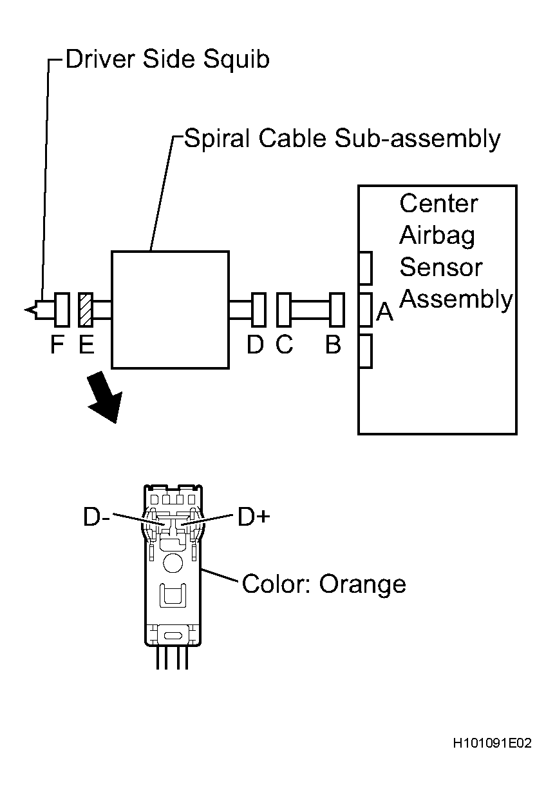

Inspection Procedure
- CHECK SPIRAL CABLE SUB-ASSEMBLY
- Turn the ignition switch to LOCK.
- Disconnect the negative (-) battery terminal cable from the battery, and wait for at least 90 seconds.
- Disconnect the connectors from the steering pad.
- Check that the spiral cable connectors (on the steering pad) are not damaged.
OK:
Lock button is not disengaged, or claw of lock is not deformed or damaged.
NG : REPLACE SPIRAL CABLE SUB-ASSEMBLY
OK : Go to Next Step
- CHECK DRIVER SIDE SQUIB CIRCUIT (CENTER AIRBAG SENSOR ASSEMBLY - STEERING PAD)
- Disconnect the connector from the center airbag sensor assembly.
- Release the activation prevention mechanism built into connector "B" (see SYSTEM DIAGRAM ).
- Measure the resistance according to the value(s) in the table below.
Standard resistance
TESTER CONNECTION - SPECIFIED CONDITION (RESISTANCE)Tester Connection (Connector "E") Specified Condition D+ - D- 1 MΩ or higher
NG : Go to step 5

Courtesy of © TOYOTA, LICENSE AGREEMENT TMS1002OK : Go to Next Step
- CHECK CENTER AIRBAG SENSOR ASSEMBLY
- Connect the connector to the center airbag sensor assembly.
- Connect the negative (-) terminal cable to the battery, and wait for at least 2 seconds.
- Turn the ignition switch ON position, and wait for at least 60 seconds.
- Clear the stored DTCs in the memory (see DTC CHECK / CLEAR ).
- Turn the ignition switch to the LOCK position.
- Turn the ignition switch to the ON position, and wait for at least 60 seconds.
- Check for the DTCs (see DTC CHECK / CLEAR
).
OK:
B0100/13 is not output.
HINT:
Codes other than code B0100/13 may be output at this time, but they are not related to this check.
NG : REPLACE CENTER AIRBAG SENSOR ASSEMBLY
- CHECK STEERING PAD (DRIVER SIDE SQUIB)
- Turn the ignition switch to the LOCK position.
- Disconnect the negative (-) terminal cable from the battery, and wait for at least 90 seconds.
- Connect the connectors to the steering pad.
- Connect the negative (-) terminal cable to the battery, and wait for at least 2 seconds.
- Turn the ignition switch to the ON position, and wait for at least 60 seconds.
- Clear the stored DTCs in the memory (see DTC CHECK / CLEAR ).
- Turn the ignition switch to the LOCK position.
- Turn the ignition switch to the ON position, and wait for at least 60 seconds.
- Check for the DTCs (see DTC CHECK / CLEAR
).
OK:
B0100/13 is not output.
HINT:
Codes other than code B0100/13 may be output at this time, but they are not related to this check.
NG : REPLACE STEERING PAD
OK : PROBLEM SYMPTOMS SIMULATION
- CHECK INSTRUMENT PANEL WIRE
- Disconnect the instrument panel wire connector from the spiral cable sub-assembly.
HINT:
The activation prevention mechanism of connector "B" has already been released.
- Measure the resistance according to the value(s) in the table below.
Standard resistance
TESTER CONNECTION - SPECIFIED CONDITION (RESISTANCE)Tester Connection (Connector "C") Specified Condition A13-1 (D+) - A13-2 (D-) 1 MΩ or higher
NG : REPAIR OR REPLACE INSTRUMENT PANEL WIRE

Courtesy of © TOYOTA, LICENSE AGREEMENT TMS1002OK : Go to Next Step
- Disconnect the instrument panel wire connector from the spiral cable sub-assembly.
- CHECK SPIRAL CABLE SUB-ASSEMBLY
- Release the activation prevention mechanism built into connector "D" (see SYSTEM DIAGRAM ).
- Measure the resistance according to the value(s) in the table below.
Standard resistance
TESTER CONNECTION - SPECIFIED CONDITION (RESISTANCE)Tester Connection (Connector "E") Specified Condition D+ - D- 1 MΩ or higher
NG : REPLACE SPIRAL CABLE SUB-ASSEMBLY

Courtesy of © TOYOTA, LICENSE AGREEMENT TMS1002OK : PROBLEM SYMPTOMS SIMULATION